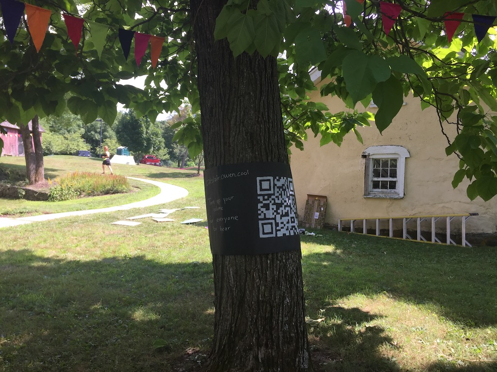

catslair is a networked, interactive, mobile web based animation which I developed the Catwalk Artist Residency in January 2019. Here are some drawings I did while I was in Catskill.
You can view catslair at catslair.owen.cool. It's multiplayer and relies on audio so you may want to view it with some friends nearby also viewing it on their own phones :/
From a play test at Wonderville.
From the Dusklit 2019 show.
Making the QR code for the poster was kinda fun.